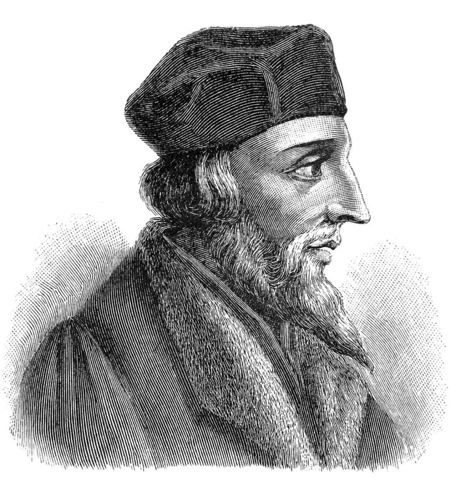

Literatura doby husitské
Informace

Potrét Jana Husa
Zdroj: Verdad y Vida
Nejvýznamnější autor - Jan Hus
- * 1370, Husinec u Prachatic
- † 1415, Kostnice
- vystudoval artistickou fakultu a teologii
- stal se knězem, působil na UK, později jako děkan FF, nakonec i jako rektor
- knihy
- Knížky o svatokupectví - česky
- Výklad Viery Desatera a Páteře - česky
- De Ecclesia (O církvi) - latinsky
- De Orthographia (O pravopisu) - latinsky
- diakritická znaménka (cz → č)
- odstranil archaismy (peku - peču, šlojíř - závoj)
- překládal německá slova